Una subred es una subdivisión lógica de una red IP más grande. Las subredes permiten organizar eficientemente una red, mejorar la seguridad y reducir la congestión de tráfico. Para crear una subred, se utiliza una máscara de subred que divide una dirección IP en dos partes: la porción de red y la porción de host.
Tema 2 PAR
6.2.1.1. Subredes
Asignación de IP's
Una organización adquiere una (o más) direcciones de clase, y el administrador local de la organización reparte la dirección de clase entre todas sus máquinas. En ocasiones, el identificador de host resulta demasiado largo, lo que da lugar a demasiadas máquinas dentro de la misma red (sobre todo con redes de clase A y B).
Por ejemplo, con una dirección de clase A son posibles 2^24 máquinas dentro de esa red.
Puede que al administrador de red, por razones topológicas o administrativas, le interese crear varias subredes.
El identificador de host se puede dividir para separar las máquinas en diferentes subredes, obteniendo así:
Nuevo identificador de red.
Nuevo identificador de host.
Ejemplo:
Supongamos que se ha adquirido la dirección 100.0.0.0, de clase A, y que existen 3 departamentos diferentes en la empresa que interesaría separar en subredes distintas.
Se pueden utilizar 8 bits del identificador de host, que originalmente tenía 24 bits, para crear un nuevo identificador de red y un nuevo identificador de host.
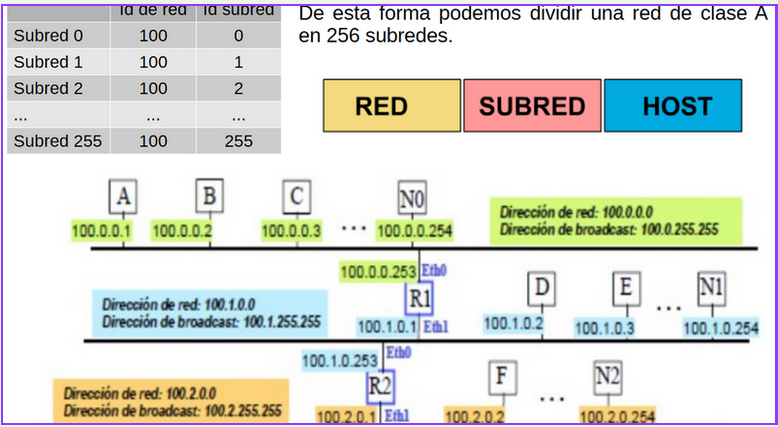
Máscaras de Subred.
Una máscara de subred es aquella dirección que enmascarando nuestra dirección IP, nos indica si otra dirección IP pertenece a nuestra subred o no.
Si expresamos la máscara de subred de clase A en notación binaria, tenemos:
11111111.00000000.00000000.00000000
- Los unos indican los bits de la dirección correspondientes a la red y los ceros, los correspondientes al host. Según la máscara anterior, el primer byte (8 bits) es la red y los tres siguientes (24 bits), el host.
- Por ejemplo, la dirección de clase A 35.120.73.5 pertenece a la red 35.0.0.0
Para saber si una dirección IP pertenece a una red, cada máquina realiza el producto lógico binario (AND) entre esa IP y la máscara, devolviendo la dirección de red.
Al hacer el producto binario de las dos primeras direcciones (donde hay dos 1 en las mismas posiciones da como resultado un 1 y en caso contrario, un 0) obtenemos la tercera.
Aplicando lo mismo a otro host, por ejemplo el que tiene dirección IP 192.168.1.89, se obtiene la misma dirección de subred. Esto significa que ambas máquinas se encuentran en la misma subred (la subred192.168.1.0).
En cambio, al tomar la 192.168.2.25, se observa que no pertenece a la misma subred que las anteriores (pertenecerá a la 192.168.2.0)
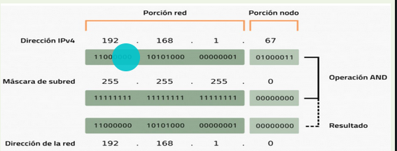
La operación puede realizarse de forma inmediata:
- Si el byte de la máscara es 255 → el byte de la dirección se repite.
- Si el byte de la máscara es 0 → el byte de la dirección es 0.
- La parte de red se deja igual y la parte de host se deja a 0.
Para calcular la dirección de difusión, hay que hacer la suma lógica en binario (OR) de la IP con el inverso (NOT) de su máscara.
Dirección de difusión = (dirección IP) OR (NOT (Máscara de subred))
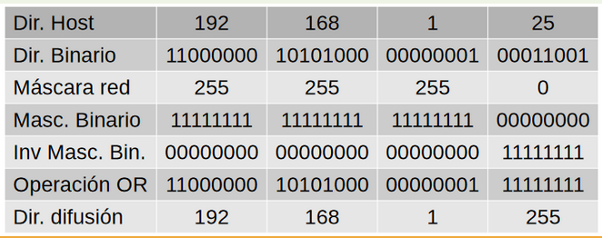
Necesidad de subredes
En una red TCP/IP no pueden haber hosts aislados: todos pertenecen a alguna red y todos tienen una dirección IP y una máscara de subred (si no se especifica se toma la máscara que corresponda a su clase).
Mediante la máscara un equipo de la red sabe si otro equipo se encuentra en su misma subred o en otra distinta. Entonces, si desea enviar un mensaje:
- Si el host pertenece a su misma subred, el mensaje se entregará directamente.
- En cambio, si los equipos se encuentran en redes distintas, el mensaje se enviará a la puerta de salida o router de la red del host origen. Este router pasará el mensaje al siguiente de la cadena y así sucesivamente hasta que se alcance la red del host destino y se complete la entrega del mensaje.
Desde el punto de vista de un host el mundo se divide en dos partes:
- sus vecinos (los que tienen el mismo prefijo)
- y el resto del mundo. Con sus vecinos habla directamente, con los demás lo hace a través del router.
La dirección IP de su propia red con la que conectan los equipos que desean enviar un mensaje al exterior y que coincide con la interfaz de red que el router muestra a esta red se denomina Default Gateway o Puerta de Enlace.
Una dirección IP en su versión 4 tiene 32 bits, de lo cuales, una parte indica la dirección de red y la otra parte indica la dirección de host dentro de esa red. Esto implica una jerarquía en el direccionamiento IP.
Para alcanzar un host en Internet, primero se debe buscar la red a la que pertenece y después se debe buscar el host dentro de la red. Esto implica que las direcciones IP de cualquier clase están diseñadas con dos niveles de jerarquía.
Con este esquema, cualquier organización se encuentra limitada a dos niveles de jerarquía, las estaciones no pueden organizarse en grupos y todas están al mismo nivel.
Una solución a este problema es la creación de subredes, que consiste en una división de la red en redes más pequeñas conectadas entre sí por uno o mas routers.
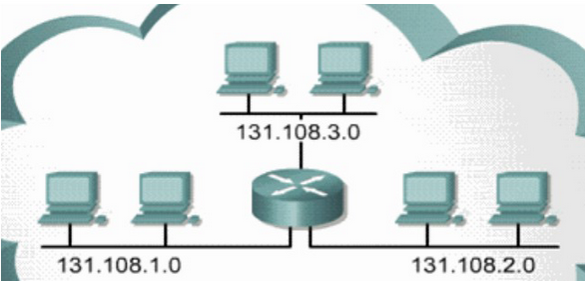
División de una Red IPv4 en Subredes
Es necesario segmentar las redes grandes en subredes más pequeñas, con lo que se crean grupos más pequeños de dispositivos y servicios con los siguientes fines:Controlar el tráfico mediante la contención del tráfico de broadcast dentro de la subred.
Reducir el tráfico general de la red y mejorar el rendimiento de ésta
División en subredes: proceso de segmentación de una red en varios espacios de red más pequeños o subredes.
Comunicación entre subredes: Se necesita un router para que los dispositivos en diferentes redes y subredes puedan comunicarse.Cada interfaz del router debe tener una dirección de host IPv4 que pertenezca a la red o a la subred a la cual se conecta la interfaz del router.
Los dispositivos en una red y una subred utilizan la interfaz del router conectada a su LAN como gateway predeterminado.
División Básica en Subredes
Préstamo de bits del Id. de Host para crear subredes:Si se toma prestado 1 bit, 2^1 = 2 subredes.
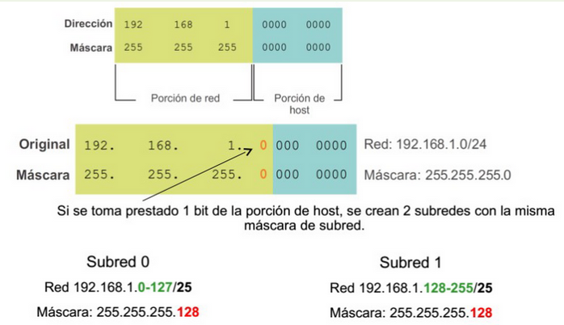
Clases
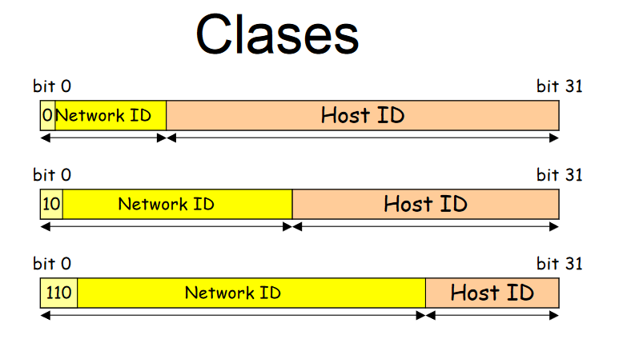
Direccionamiento Classful
El direccionamiento classful es un esquema de direccionamiento IP que fue utilizado en los primeros días de las redes informáticas. Este sistema ha sido reemplazado en su mayor parte por técnicas más modernas como el CIDR (Classless Inter-Domain Routing), pero sigue siendo fundamental para comprender cómo se gestionaban las redes inicialmente y cómo se agrupan las direcciones IP.
El direccionamiento IP es el sistema mediante el cual se asignan direcciones únicas a los dispositivos en una red. Cada dispositivo en una red que utiliza el protocolo IP (Internet Protocol) debe tener una dirección IP, que sirve para identificarlo y permitir la comunicación entre ellos.
Las direcciones IP se representan en formato decimal con puntos y están compuestas por 32 bits en el caso de IPv4. Esto se traduce en cuatro octetos (bloques de 8 bits), cada uno separado por un punto, como en: 192.168.1.1.
El direccionamiento classful divide el espacio de direcciones IPv4 en clases, con un enfoque rígido que asigna porciones específicas del espacio de direcciones a diferentes "clases" de redes. Este esquema fue propuesto para hacer más fácil la asignación de direcciones según las necesidades de diferentes tamaños de redes.
En este sistema, las direcciones IP se clasifican en cinco clases: A, B, C, D y E. Las tres primeras, A, B y C, son las más utilizadas para asignar direcciones a dispositivos en redes. Veamos cada una en detalle:
Clases de Direccionamiento Classful
1. Clase A (0.0.0.0 - 127.255.255.255):
Rango de direcciones IP: 0.0.0.0 a 127.255.255.255.
Destinada a: Redes muy grandes.
Estructura:
- El primer octeto (los primeros 8 bits) se usa para identificar la red.
- Los otros tres octetos (24 bits) se usan para identificar los hosts dentro de esa red.
Número máximo de redes: 128 redes posibles.
Número máximo de hosts por red: Aproximadamente 16 millones de hosts (2^24 - 2, se restan 2 direcciones especiales).
Ejemplo: 10.0.0.0 es una dirección de red de clase A comúnmente utilizada en redes privadas.
2. Clase B (128.0.0.0 - 191.255.255.255):
Rango de direcciones IP: 128.0.0.0 a 191.255.255.255.
Destinada a: Redes de tamaño mediano a grande.
Estructura:
- Los primeros dos octetos (16 bits) se usan para identificar la red.
- Los otros dos octetos (16 bits) se usan para identificar los hosts dentro de esa red.
Número máximo de redes: 16,384 redes posibles.
Número máximo de hosts por red: Aproximadamente 65,000 hosts.
Ejemplo: 172.16.0.0 es una dirección de red de clase B.
3. Clase C (192.0.0.0 - 223.255.255.255):
Rango de direcciones IP: 192.0.0.0 a 223.255.255.255.
Destinada a: Redes pequeñas.
Estructura:
- Los primeros tres octetos (24 bits) se usan para identificar la red.
- El último octeto (8 bits) se usa para identificar los hosts dentro de esa red.
Número máximo de redes: Aproximadamente 2 millones de redes posibles.
Número máximo de hosts por red: 254 hosts (2^8 - 2).
Ejemplo: 192.168.0.0 es una dirección de red de clase C comúnmente utilizada en redes domésticas y pequeñas.
4. Clase D (224.0.0.0 - 239.255.255.255):
Rango de direcciones IP: 224.0.0.0 a 239.255.255.255.
Destinada a: Direcciones multicast.
No se asigna a redes o hosts individuales. Estas direcciones se utilizan para enviar un mensaje a múltiples dispositivos en una red simultáneamente.
5. Clase E (240.0.0.0 - 255.255.255.255):
Rango de direcciones IP: 240.0.0.0 a 255.255.255.255.
Destinada a: Uso experimental o reservado.
No se asigna para uso público o comercial.
Características del Direccionamiento Classful
- Fronteras fijas de red y host: En el direccionamiento classful, la porción de red y la porción de host están claramente definidas y dependen de la clase a la que pertenece la dirección IP.
- Desperdicio de direcciones: Un problema con el direccionamiento classful es que a veces se asignan más direcciones de las necesarias. Por ejemplo, si tienes una red pequeña pero utilizas una dirección de clase B, estarías desperdiciando muchas direcciones IP que podrían ser usadas por otros dispositivos.
- Sin flexibilidad: No permite dividir las redes en subredes de tamaños personalizados. Cada red tiene que ajustarse estrictamente al tamaño definido por su clase.
Ejemplo Práctico de Desperdicio de Direcciones
Imagina que una pequeña empresa tiene solo 50 dispositivos en su red. Si utilizan una red de Clase B, tendrían un espacio para aproximadamente 65,000 hosts. Esto es mucho más de lo que necesitan, lo que resulta en un gran desperdicio de direcciones IP.
Este problema es lo que llevó al desarrollo de técnicas como CIDR (Classless Inter-Domain Routing), que permite dividir el espacio de direcciones de manera más eficiente, ajustando el tamaño de las redes según las necesidades específicas.
El direccionamiento classful fue crucial en la etapa inicial del crecimiento de Internet, pero su rigidez y el desperdicio de direcciones lo volvieron ineficiente a medida que las redes se expandieron. Hoy en día, se utilizan técnicas más flexibles como el subnetting y CIDR, pero el modelo classful sigue siendo esencial para entender cómo se organizaban originalmente las redes y por qué fue necesario evolucionar hacia esquemas más dinámicos.
Subnetting
La evolución de los esquemas de direccionamiento IP refleja cómo Internet creció desde redes simples hasta complejas, exigiendo soluciones cada vez más eficientes para gestionar el espacio de direcciones y las tablas de enrutamiento. Esta evolución se da a partir del subnetting puro, seguido por el uso de VLSM (Variable Length Subnet Masking), el Supernetting y finalmente CIDR (Classless Inter-Domain Routing), cada uno mejorando la flexibilidad y eficiencia en la asignación de direcciones IP.
El subnetting puro surgió como una extensión de este sistema de clases, permitiendo que las organizaciones dividieran su red (por ejemplo, una red de clase A, B o C) en subredes más pequeñas mediante el uso de máscaras de subred adicionales. Esto permitió a las empresas tener múltiples redes internas dentro de un solo bloque de direcciones IP.
Problemas con el Subnetting Puro:
- Desperdicio de direcciones IP: El sistema basado en clases fue muy inflexible. Por ejemplo, una organización que necesitaba 300 direcciones IP recibiría una red de clase B (65,536 direcciones), lo que generaba un desperdicio masivo.
- Tablas de enrutamiento enormes: Cada red tenía que ser anunciada de forma separada, lo que provocaba un crecimiento acelerado de las tablas de enrutamiento en Internet.
Ejemplo: la empresa X utiliza la red40.40.0.0 / 255.255.0.0 (es decir desde 40.40.0.0 hasta 40.40.255.255) en una LAN enorme. Para reducir el tráfico broadcastdecide dividirla formando 256 VLANs, todas con menos de 256 ordenadores. Las subredes podrían ser:

Una de las conclusiones que podemos extraer del subnetting es que las máscaras no siempre son de 8, 16 o 24 bits. En estos casos la separación de la parte red y la parte host no es tan evidente, aunque el mecanismo es el mismo:
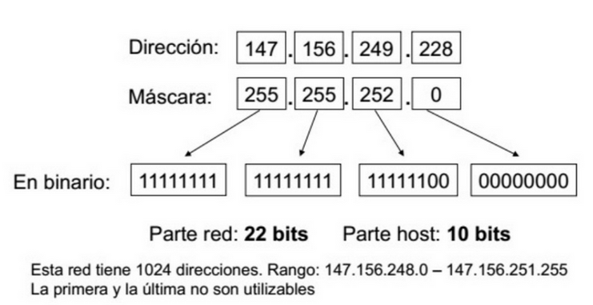
Valores permitidos en las Máscaras de Red
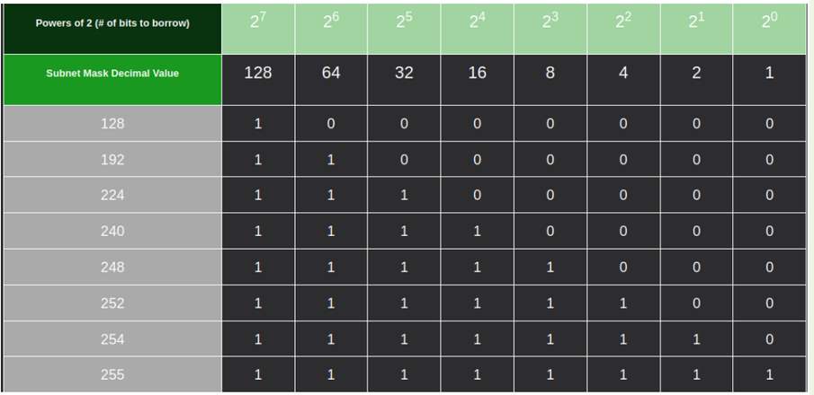
El subnetting también es llamado FLSM (Fixed Length Subnet Masks) y en él parte del Host ID se emplea para diferenciar la subred.
NetworkID+SubnetworkID = ExtendedNetworkID
En este caso solo existe una máscara posible en toda la red, siendo todas las subredes de igual tamaño.
Debes conocer
La red más pequeña que podemos hacer es la de máscara de 30.
El n.º de hosts que se pueden obtener a partir de una máscara es:
N.º hosts=2n-2 (n: n.º de 0 a la derecha de la máscara)
En el caso de máscara 30 tendríamos 2 direcciones útiles. Este tipo de redes se suelen utilizar en enlaces punto a punto.
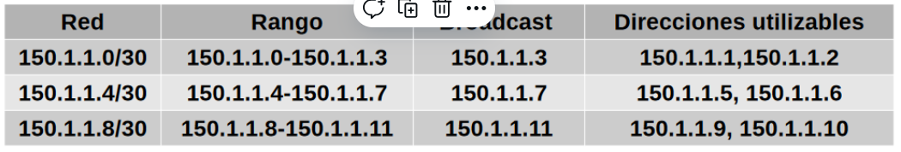
VLSM
VLSM fue una evolución natural del subnetting puro, permitiendo una mayor flexibilidad al poder definir subredes con diferentes tamaños dentro de una misma red. Se permitió a los administradores utilizar máscaras de subred de longitud variable (Variable Length Subnet Masks), lo que significaba que ya no era necesario que todas las subredes fueran del mismo tamaño.
Beneficios del VLSM:
- Optimización del espacio IP: Permitió asignar direcciones más eficientemente según las necesidades específicas de cada subred.Por ejemplo, una red con 192.168.1.0/24 podría subdividirse en subredes más pequeñas: 192.168.1.0/26, 192.168.1.64/26, 192.168.1.128/27, y así sucesivamente.
- Más subredes: Permitió dividir una red en subredes más pequeñas y con tamaños diferentes, lo que solucionó el problema de las asignaciones de direcciones innecesariamente grandes.
Las máscaras de subred de tamaño variable o VLSM (del inglés Variable Length Subnet Mask) representan otra de las tantas soluciones que se implementaron para evitar el agotamiento de direcciones IP en IPv4 (1987), como la división en subredes (1985), el enrutamiento sin clases CIDR (1993), NAT y las direcciones IP privadas.
Otra de las funciones de VLSM es descentralizar las redes y de esta forma conseguir redes más seguras y jerárquicas.
Ejemplo de desperdicio de direcciones IP: subred con 200 host → todas las subredes con 256 direcciones, aunque necesiten menos.
El concepto básico de VLSM es muy simple: se toma una red y se divide en subredes fijas, luego se toma una de esas subredes y se vuelve a dividir, tomando bits "prestados" de la porción de hosts, ajustándose a la cantidad de hosts requeridos por cada segmento de nuestra red.
Ejemplo:
- Se toma la dirección de red 192.168.20.0/24 y se subdivide usando una máscara /27 se tienen 8 subredes.
- Si se construye un enlace entre 2 routers y se toma para ello una de las subredes (192.168.20.224/27), con esta máscara de subred sin aplicar VLSM se desperdiciarían 28 direcciones utilizables (con 27 bits de máscara, quedaría 5 bits para hosts, 2⁵=32, restando las direcciones para red y difusión y la scorrespondientes a las interfaces de los routers quedarían 28 direcciones para hosts).
- Ahora, si se aplica VLSM a una de las subredes anteriores (la 192.168.20.224/27) y se toman "prestados" 3 bits de la porción de host tendríamos otras 8 subredes /30 cada una con un total de 4 direcciones totales pero solamente dos direcciones utilizables y no se genera desperdicio. Finalmente podemos tomar cualquiera de ellas, por ejemplo la 192.168.20.224/30 y aplicar las direcciones 192.168.20.225/30 y 192.168.20.226/30 a las interfaces de los routers.
Los protocolos de enrutamiento que soportan VLSM deben mantener y enviar, cuando difundan la información de su tabla de enrutamiento a través de la red, la máscara de subred asociada a cada una de las direcciones IP de cada entrada o ruta de encaminamiento.
Ejemplos de protocolos de encaminamiento que admiten VLSM son RIP versión 2, OSPF, las versiones más recientes de BGP, y EIGRP.
Una alternativa para ahorrar las escasas direcciones públicas, es utilizar direcciones privadas, en combinación con traducción NAT, especialmente en las direcciones que no necesitan ser alcanzados desde fuera de la red interna.
Problemas persistentes:
Aunque VLSM permitió usar el espacio de direcciones de manera más eficiente dentro de redes privadas, el problema de las tablas de enrutamiento crecientes en Internet persistía.
Supernetting (Agregación de Rutas)
El Supernetting, a veces llamado agregación de rutas, fue un intento de abordar el problema del crecimiento de las tablas de enrutamiento. A medida que se conectaban más redes a Internet, las tablas de enrutamiento en los routers se hacían cada vez más grandes, lo que dificultaba la administración y ralentizaba el proceso de enrutamiento.
Supernetting permitió combinar varias redes más pequeñas en una sola red más grande.
Por ejemplo, en lugar de anunciar cuatro redes de clase C, como 192.168.0.0/24, 192.168.1.0/24, 192.168.2.0/24 y 192.168.3.0/24, se podían agrupar en un único anuncio: 192.168.0.0/22.
Otro ejemplo, dieciséis redes /24 contiguas pueden ser agregadas y publicadas en los enrutadores de Internet como una sola ruta /20 (si los primeros 20 bits de sus respectivas redes coinciden). Dos redes /20 contiguas pueden ser agregadas en una /19, etc.
Esto permite una reducción significativa en el número de rutas que los enrutadores en Internet tienen que conocer (y una reducción de memoria, recursos, etc.) y previene una explosión de tablas de encaminamiento, que podría sobrecargar a los routers e impedir la expansión de Internet en el futuro.
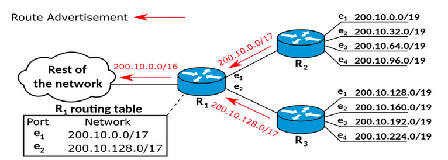
Para muchas organizaciones una dirección de red de clase C es poco.
Solución: Agrupar direcciones consecutivas (tienen un prefijo común) de redes de clase C para asignarlas a una organización. Esto permite asignar espacio de direcciones a organizaciones con redes de tamaño medio, evitando utilizar direcciones de clase B.
Ejemplo de agrupamiento:
➔ 193.40.128.0: 11000001 00101000 10000000 00000000
➔ 193.40.129.0: 11000001 00101000 10000001 00000000
➔ … …
➔ 193.40.142.0: 11000001 00101000 10001110 00000000
➔ 193.40.143.0: 11000001 00101000 10001111 00000000
- La dirección de red/máscara sería 193.40.128.0/20 (255.255.240.0)
- Máscara en binario: 11111111 11111111 11110000 00000000.
- Existen 2¹²-2 (4096-2) direcciones IP para hosts.
Beneficios del Supernetting:
- Reducción de las tablas de enrutamiento: Al agregar redes, se reduce el número de rutas que los routers tienen que manejar.
- Mejora del rendimiento: El supernetting simplificó el enrutamiento en las redes troncales de Internet.
Limitaciones: - Dependencia del direccionamiento por clases: El Supernetting estaba limitado por los bloques de redes predefinidos (clases) y no resolvía completamente la inflexibilidad del direccionamiento de clase en términos de la asignación de direcciones IP.
CIDR (Classless Inter-Domain Routing)
Finalmente, en 1993, se introdujo CIDR por IETF como una solución para eliminar por completo las limitaciones del direccionamiento por clases y representó una mejora en el modo de interpretar las direcciones IP. Con CIDR, las direcciones IP ya no están restringidas a las clases A, B o C; en su lugar, las redes se definen mediante un prefijo de longitud variable, permitiendo la asignación de bloques de direcciones según la necesidad exacta de direcciones.
En español, Enrutamiento ( Encaminamiento) entre Dominios sin Clases. (Se pronuncia como “cider” o “cedar”). Su introducción permitió una mayor flexibilidad al dividir rangos de direcciones IP en redes separadas.
CIDR reemplaza la sintaxis previa para nombrar direcciones IP, las clases de redes. ya que en vez de asignar bloques de direcciones en los límites de los octetos, que implicaban prefijos “naturales” de 8, 16 y 24 bits, CIDR usa la técnica VLSM para hacer posible la asignación de prefijos de longitud arbitraria.
Evolución con CIDR:
- Asignación sin clases: CIDR permite asignar bloques de direcciones de cualquier tamaño. Por ejemplo, en lugar de estar restringido a una red de clase C (192.168.0.0/24), se pueden asignar bloques de tamaño personalizado como 192.168.0.0/26 (62 direcciones), o 192.168.0.0/22 (1024 direcciones), según las necesidades exactas.
- Agregación de rutas: CIDR permite la agregación de rutas mucho más eficiente que Supernetting, lo que reduce drásticamente el tamaño de las tablas de enrutamiento.
CIDR engloba:
- La técnica VLSM para especificar prefijos de red de longitud variable que permite un uso más eficiente del cada vez más escaso espacio de direcciones IPv4.
- La agregación de múltiples prefijos contiguos en super-redes, reduciendo el número de entradas en las tablas de ruta globales.
CIDR es un estándar de red para la interpretación de direcciones IP.
CIDR facilita el encaminamiento al permitir agrupar bloques de direcciones en una sola entrada de la tabla de rutas. Estos grupos, llamados comúnmente Bloques CIDR, comparten una misma secuencia inicial de bits en la representación binaria de sus direcciones IP.
Los bloques CIDR IPv4 se identifican usando una sintaxis similar a la de las direcciones IPv4: cuatro números decimales separados por puntos, seguidos de una barra de división y un número de 0 a 32; A.B.C.D/N.
Los primeros cuatro números decimales se interpretan como una dirección IPv4, y el número tras la barra es la longitud de prefijo, contando desde la izquierda, y representa el número de bits comunes a todas las direcciones incluidas en el bloque CIDR.
Una dirección IP está incluida en un bloque CIDR, y encaja con el prefijo CIDR, si los N bits iniciales de la dirección y el prefijo son iguales. Por tanto, para entender CIDR es necesario visualizar la dirección IP en binario.
Dado que la longitud de una dirección IPv4 es fija, de 32 bits, un prefijo CIDR de N-bits deja 32-N bits sin encajar, y hay 2(32-N) combinaciones posibles con los bits restantes. Esto quiere decir que 2(32-N) direcciones IPv4 encajan en un prefijo CIDR de N-bits.
Una dirección IP puede encajar en varios prefijos CIDR de longitudes diferentes.
CIDR también se usa con direcciones IPv6, en las que la longitud del prefijo varia desde 0 a 128, debido a la mayor longitud de bit en las direcciones, con respecto a IPv4. En el caso e IPv6 se usa una sintaxis similar a la comentada: el prefijo se escribe como una dirección IPv6, seguida de una barra y el número de bits significativos.
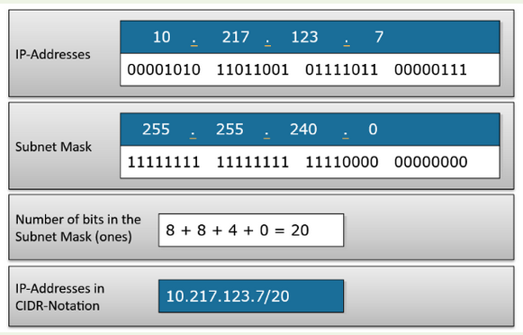
Beneficios de CIDR:
- Optimización del espacio de direcciones: Permitió una asignación mucho más precisa de bloques de direcciones IP, aliviando el problema del agotamiento de direcciones IPv4, haciendo un uso más eficiente de las cada vez más escasas direcciones IPv4.
- Reducción de las tablas de enrutamiento: Al permitir la agregación de rutas sin depender de clases rígidas, CIDR simplificó significativamente las tablas de enrutamiento.
- Escalabilidad: CIDR fue fundamental para permitir el crecimiento de Internet sin la sobrecarga masiva de gestión en los routers.
- Un mayor uso de la jerarquía de direcciones (agregación de prefijos de red), disminuyendo la sobrecarga de los enrutadores principales de Internet para realizar el encaminamiento.
Comparación de los esquemas de direccionamiento
| Esquema | Beneficio Principal | Desventajas |
| Subnetting puro | Introducción al concepto de subredes. | Desperdicio de direcciones IP y tablas de enrutamiento grandes. |
| VLSM | Flexibilidad para crear redes de tamaños variables. | No soluciona el problema de las grandes tablas de enrutamiento en Internet |
| Supernetting | Permite la agregación de rutas reduciendo el tamaño de las tablas de enrutamiento. | Limitado por el direccionamiento basado en clases. |
| CIDR | Flexibilidad total en la asignación de direcciones y agregación de rutas. | Requiere routers compatibles con CIDR para su implementación. |
Obra publicada con Licencia Creative Commons Reconocimiento Compartir igual 4.0